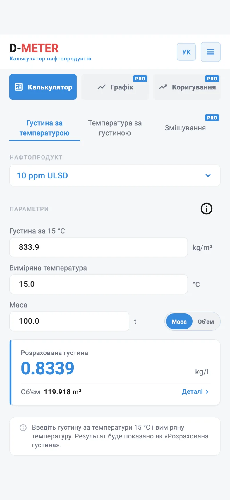

01 · FREE
Об’єм партії дизпалива за масою
ЗадачаПартія 10 ppm ULSD масою 100 т із густиною 833,9 кг/м³ за 15 °C: яка її густина за виміряної температури та який об’єм?
Вхідні дані
- Нафтопродукт
- 10 ppm ULSD
- Густина за 15 °C
- 833.9 kg/m³
- Виміряна температура
- 15.0 °C
- Маса
- 100.0 t
Результат у застосунку
- Густина за температурою
- 0.8339 kg/L
- Об’єм
- 119.918 m³
За 15,0 °C густина за температурою дорівнює густині за 15 °C; за будь-якої іншої температури D-METER її коригує.
